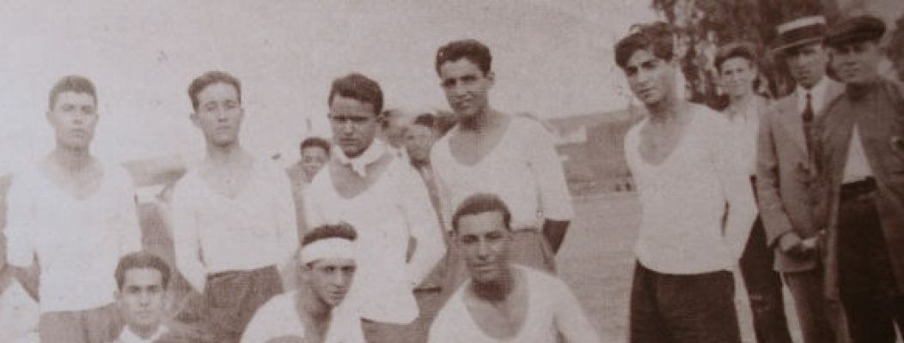
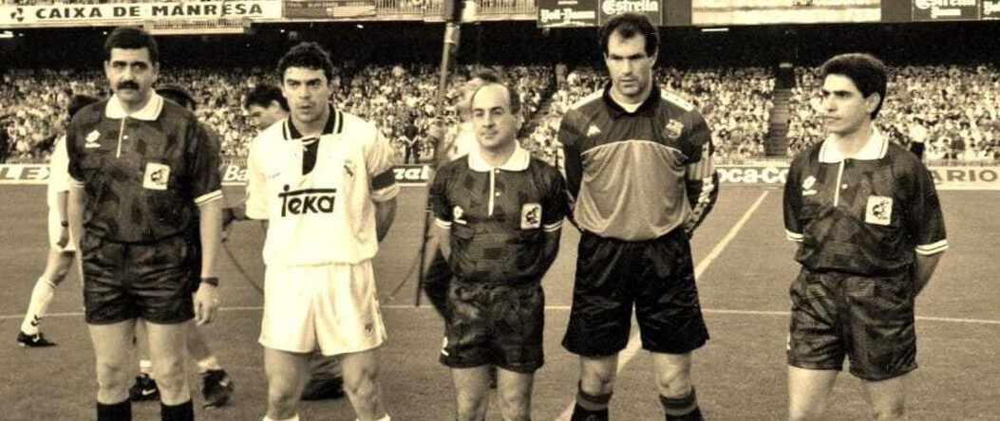
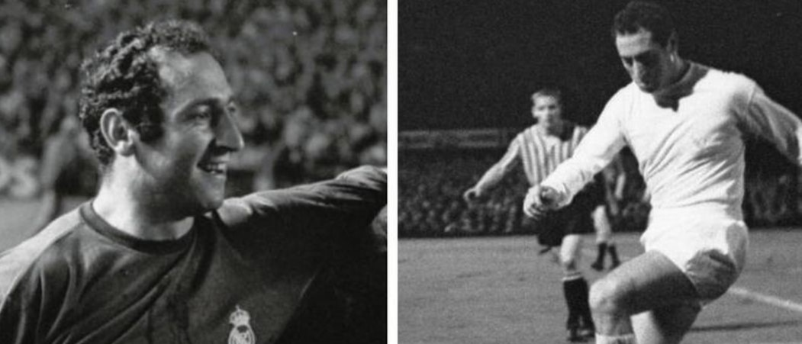
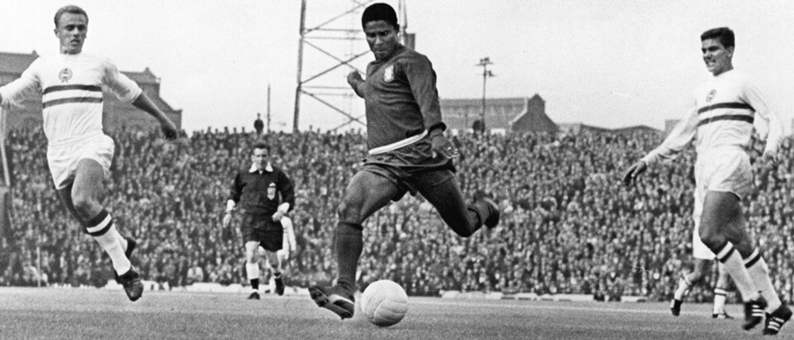

El fútbol se introduce en España a través del trabajo inmigrante y británicos, hacia finales del siglo XIX. Fueron los ingleses asentados en las Minas de Riotinto, Huelva (Andalucía), en Jerez (Andalucía) y en Vigo (Galicia) los que disputaron los primeros partidos hacia 1860. Pero también fue introducido en el ámbito educativo, al igual que el tenis, por medio de un tipo de educación privada no oficial cuya pedagogía innovadora no descuidaba la formación conjunta de cuerpo y espíritu en varones y féminas, y así se ha documentado el uso del deporte, y más en concreto el fútbol y el tenis, para la educación física de los alumnos de la anglófila Institución Libre de Enseñanza (1876-1936), como parte de la pedagogía del krausismo. Surgen en 1876 y 1878 los que fueron los primeros «protoclubes» españoles: el Exiles Cable Club y el Río Tinto Foot-Ball Club. Estas sociedades, sin embargo, no fueron inscritas en ningún registro oficial por lo que no ha quedado constancia legal de su existencia. El primer club de fútbol español legalmente establecido fue el Cricket y Foot-Ball (Club) de Madrid, en 1879, y que parece que inició leves actividades también en 1878. A posteriori, surge el Huelva Recreation Club, actual Real Club Recreativo de Huelva, que fue establecido el 18 de diciembre de 1889, siendo el equipo Decano del futbol español, a ser el club más antiguo con existencia ininterrumpida de España. Se establece también en 1890 un club en Sevilla debido a la inmigración escocesa existente a finales del siglo xix, bajo el nombre de Sevilla Foot-Ball Club, que dio con el actual Sevilla Fútbol Club.
En Albacete trabajadores de las industrias del ferrocarril comienzan a jugar al foot-ball a través de la asociación Locomotoras Albacete Balón-Pié, guiados por los ingenieros ingleses desplazados a la ciudad manchega. Con la llegada del siglo XX los clubes de fútbol (foot-ball en la época) empezaron a proliferar por todo el país. Estas primeras sociedades eran casi siempre fundadas por extranjeros. El rápido crecimiento de entusiastas y entidades impulsa la creación de las primeras asociaciones encargadas de su regulación. La primera de ellas fue la Foot-Ball Associació establecida en Cataluña el 11 de noviembre de 1900. También se organizaron las primeras competiciones, como la Copa Macaya creada el 6 de enero del siguiente año por el Hispania Athletic Club. Esta competición fue predecesora del que sería también uno de los primeros campeonatos oficiales de fútbol disputados en España, el Campeonato de Cataluña de Football, que surgió unos días después que el homónimo Campeonato de Madrid de Foot-Ball Association.
El aún poco organizado deporte encontraba aún bastantes detractores que trabaron una mayor expansión, pues era considerado en sus primeros años como peligroso. En 1902 se organizó la primera competición a nivel nacional, el Concurso Madrid de Foot-Ball Association o popularmente Copa de la Coronación, organizada por el Madrid Foot-Ball Club, que fue el embrión de la actual Copa del Rey debido a su éxito y que en sus orígenes fue denominada como Campeonato de España.
Hasta 1909 no se vio por primera vez una asociación a nivel nacional que rigiese este deporte. Esta nació el 14 de octubre bajo el nombre de Federación Española de Clubs de Football, y también se creó una Unión Española de Clubs de Foot-ball debido a diferencias entre los clubes. Tras adoptar un consenso en 1910 y quedar todos los clubes asociados a la primera, surgieron nuevas discrepancias años después y así surgió la Real Unión Española de Clubs de Foot-ball. Ambas reclamaban su oficialidad estatal y organizaron campeonatos paralelos de la Copa del Rey. Finalmente, y tras la negativa de la Federación Internacional de Fútbol Asociación (FIFA), máxima autoridad futbolística internacional, al ingreso de España como asociada por no aceptar la coexistencia de dos federaciones nacionales, ambas firman la paz y su unión el 30 de julio de 1913. Así, el 29 de septiembre nació oficialmente la actual Real Federación Española de Fútbol, después de haber otorgado el rey Alfonso XIII la distinción real. La selección española se creó en 1920 con motivo de la disputa de los Juegos Olímpicos de Amberes.
El primer gran cambio en el balompié español llega en 1926 cuando, tras un largo proceso de debate iniciado en 1924,22 los clubes aprueban el Primer Reglamento del Fútbol Profesional español el 30 de junio. Siguiendo el modelo británico se daba así el paso hacia el profesionalismo, sentando las bases para el nacimiento de un Campeonato Nacional de Liga Profesional, cuya primera edición se disputó en 1929. Previamente hubo un primer intento de organizar un campeonato que se desdobló en dos torneos y que no llegaron a concluir por las discrepancias entre clubes y federaciones ya que entraba en conflicto con las fechas de las hasta entonces únicas competiciones: los correspondientes campeonatos de cada federación regional, y el ya citado Campeonato de España de Copa.
El fútbol contaba con una gran afición y continuó su crecimiento hasta la guerra civil española (del 18 de julio de 1936 al 1 de abril de 1939). Como consecuencia del conflicto bélico hubo una interrupción de las competiciones de fútbol de ámbito estatal, que se reanudaron al finalizar la guerra. Una vez establecida la dictadura de Franco se impusieron cambios como la obligación de tener sus nombres en castellano, alterando así los nombres originales de algunos equipos que usaban el inglés o alguna otra lengua peninsular (Athletic Club pasó a denominarse Atlético de Bilbao, y Football Club Barcelona como Club de Fútbol Barcelona, por citar dos ejemplos). Dicha imposición se mantuvo hasta 1972, pudiendo los equipos que lo desearan incluir anglicismos en su denominación, así como regresar a sus nombres originales. Durante la dictadura de Franco el fútbol actuó como medio de control social y un mecanismo de nacionalización y propaganda mediante la apropiación franquista de las victorias del fútbol español y en la promoción de una identidad colectiva de los españoles.
En la temporada 1948-49 todos los equipos utilizaron dorsales en sus uniformes, introducidos en el territorio la temporada anterior por el Real Madrid a semejanza del fútbol inglés. En el año 1965 se autorizó un cambio por equipo, además de la sustitución del portero en caso de lesión (que ya se había autorizado en la temporada 1929-30), y a partir de la temporada 1969-70 se amplió a dos cambios.
En la temporada 1970-71 se empezaron a utilizar las tarjetas, y en un principio las tarjetas amarillas actuales eran blancas.En 1972 se denunció el caso de los falsos oriundos que destapó el fraude documental de jugadores sudamericanos que no tenían ascendencia española. Después del fracaso de la selección española en el Mundial de 1962 la Real Federación Española de Fútbol prohibió la contratación de balompedistas extranjeros, y solo permitió la contratación de jugadores con ascendencia española si no eran Internacionales en sus países de origen. Sin embargo, fueron contratados un gran número de jugadores sudamericanos que incumplían la normativa federativa y cuya documentación era falsa, e incluso algunos de estos jugadores habían jugado de forma irregular partidos en la selección. En 1973 la RFEF admitió la inclusión de futbolistas extranjeros en las competiciones españolas.El 4 de marzo de 1979 se convocó la primera huelga de futbolistas, que fue un éxito. Las principales reivindicaciones fueron la abolición del derecho de retención y su inclusión en la Seguridad social.En 1981 la RFEF autorizó la publicidad en las camisetas.
La XII Copa Mundial de Fútbol tuvo lugar en España en 1982, que por primera vez se jugó con 24 equipos de selecciones nacionales. La importancia que adquirió el campeonato de Liga —desbancando como competición más importante en el territorio a la Copa— hizo que en el año 1984 se crease la Liga Nacional de Fútbol Profesional, también conocida por las siglas LFP o la marca comercial La Liga, asociación que estaba integrada por los clubes y las sociedades anónimas deportivas que participaban en las diferentes categorías profesionales de la liga española de fútbol. Desde entonces dicho organismo se ha encargado de la regulación de la Liga de Primera y Segunda División "A" en coordinación con la Real Federación Española de Fútbol. En la temporada 1995-96 se autorizó el dorsal fijo para los jugadores, los tres cambios de jugadores durante el partido, y la asignación de 3 puntos por victoria.
A partir de los años 1990 el balompié español vivió una segunda revolución con la conversión de los clubes deportivos en sociedades anónimas deportivas, los ingresos por las retransmisiones televisivas, los fichajes millonarios y la globalización futbolística a raíz de la sentencia Bosman dan origen a la llamada «Liga de las Estrellas». Circunstancias todas que fueron en detrimento de los jugadores españoles que vieron como cada vez más llegaban jugadores de diversas nacionalidades. Dicho suceso vio su punto más alto cuando por primera vez un equipo alineó en su equipo inicial a once jugadores de nacionalidad distinta, en el partido entre el Granada Club de Fútbol —el implicado— y el Real Betis Balompié, en el partido correspondiente a la jornada 23 de la temporada 2016-17. El mismo club formó también con un once sin españoles, al igual que el Atlético de Madrid en 2008, o el Sevilla Fútbol Club en 2016 por citar algunos.35 Para paliar dichas circunstancias, también acaecidas en otros países como Italia, la UEFA comenzó a mediados de los años 2000 a establecer una serie de normativas a cumplir para disputar las competiciones continentales, como la de que un equipo debe inscribir sine qua non a al menos cuatro jugadores formados en el país de origen del club, y que al menos dos hayan estado formados en sus respectivas categorías inferiores, incrementando posteriormente las cifras a ocho jugadores en total, y al menos cuatro de la propia cantera.
